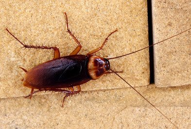

In this website, I will be discussing common insects that you can often find in your own home, including ants, spiders, cockroaches, and flies. Specifically, I'll detail their surprisingly short lifespans and what they do during their short lives. Bugs, with their unique features distinct from other mammals, have interested me since childhood. That's why I've dedicated this assignment to them.
A bug's life is harsh, and one of the most common bugs is the housefly. You've seen many of these crawlers in your home, but what exactly do they do?
Despite their flaws, houseflies are integral to the balance of the ecosystem. They break down decaying matter and serve as a food source for frogs and other creatures. Before you recoil in disgust, remember that they play an important role, just as you do. Houseflies go through four stages: egg, larva, pupa, and adult, and they often live for about 15 to 30 days. In this short time, they carry out their purpose, showing how everything has its place in the web of life.

With great power comes great responsibility, and spiders have their share of it. Spiders have various habitats and variations. The most common, funnel web spiders, possess all the iconic traits expected of a spider, including 8 legs, 8 eyes, and the ability to produce intricate silk patterns to catch prey. Spiders are natural pest controllers, with their webs capturing flies more effectively than anything else in nature. They also help maintain air and water quality in ecosystems by trapping airborne particles, such as pollen and pollutants.
It's easy to hate on a cockroach. They're gross, don't have a superhero based off of them, and seemingly don't have as much purpose. But cockroaches are resilient things above all else that should be admired. They are ultimate survivors, eating anything from crumbs to cardboard just to keep on going. Cockroaches are able to endure even the most tough situations, that a human wouldn't dream of. Nuclear bombs come to mind. And because cockroaches would eat just about anything, they're great at disposing of waste as well. Cockroaches typically live about 1 to two years.
So while I've barely scratched the exoskeleton, I hope you've learned a few things today, and looked at the creepy crawlers in a new light after reaching the end of this website.